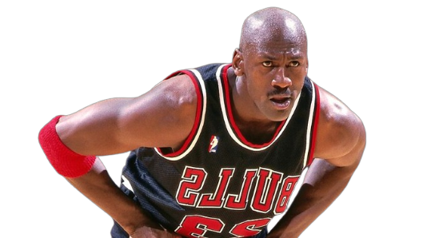

Het begon allemaal in 1984 toen Michael Jordan, een jonge en opkomende ster in het basketbal, een samenwerkingscontract tekende met Nike. Dit was een opvallende zet, omdat Jordan op dat moment niet de eerste keuze was voor sponsoring door grote sportmerken. In 1985 werd de eerste Air Jordan-schoen, de Air Jordan I, uitgebracht. Het ontwerp van de schoen was opvallend en brak met de conventionele basketbalschoenesthetiek van die tijd. De zwarte en rode kleuren van de Air Jordan I werden als ongebruikelijk beschouwd, en de NBA legde zelfs boetes op aan Jordan omdat de schoenen niet voldeden aan de strikte kleurvoorschriften van de competitie.

Nike zette een agressieve marketingcampagne op rond de Air Jordans, waarbij het merk gebruikmaakte van de persoonlijkheid en het charisma van Michael Jordan. De beroemde "Jumpman" -logo, dat een gestileerde versie van Jordan toont die een dunk uitvoert, werd een iconisch symbool van de Jordan-lijn. In de loop der jaren evolueerde het ontwerp van de Air Jordans. Elk nieuw model werd gekenmerkt door innovatieve technologieën, geavanceerde materialen en stijlvolle ontwerpelementen. De lijn werd niet alleen gewaardeerd om zijn prestaties op het basketbalveld, maar ook als een mode- en lifestyle-icoon.
De Air Jordans hebben een blijvende invloed op de sneakerindustrie en popcultuur. Ze zijn niet alleen geliefd bij basketbalfans, maar ook bij sneakerliefhebbers en modebewuste individuen over de hele wereld. Het succes van de Air Jordans leidde tot de oprichting van het zelfstandige Air Jordan-merk binnen Nike. Dit merk blijft nieuwe modellen uitbrengen en retroversies van eerdere releases. De Air Jordans hebben niet alleen de manier waarop basketbalschoenen worden ontworpen veranderd, maar ze hebben ook de relatie tussen sport, mode en popcultuur gevormd. Het merk blijft een invloedrijk en gewild onderdeel van de sneakerwereld.